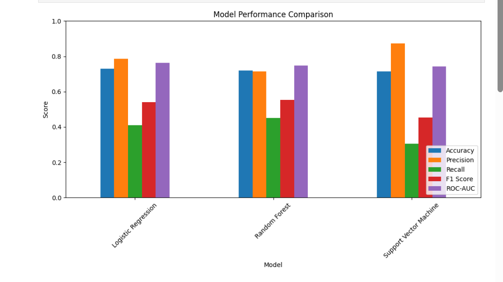

SELECTED WORK
Projects
A selection of analytics and automation work spanning machine learning, SQL, Tableau, operational reporting, and data-quality engineering.
Predictive Lead-to-Student Conversion System
Built and evaluated classification models to predict lead conversion and support prioritization. The project compared multiple approaches and produced conversion probabilities plus High, Medium, and Low priority groups for operational use.
Focus: model evaluation, feature preparation, classification, business interpretation, and dashboard communication.
Python • Pandas • Scikit-learn • Random Forest • Logistic Regression • Tableau

Contact-Center Transfer Analysis
Designed SQL audit logic to reconcile lead insertions with qualifying Salesforce transfer activity. The analysis uses joins, deduplication, window functions, vendor-credit rules, and date windows to create auditable operational performance reporting.
SQL Server • SSMS • Salesforce • Window Functions • Data Validation
Admissions Reporting & Workflow Automation
Built repeatable workflows for cleaning, segmenting, validating, scheduling, and distributing operational data. These solutions combine Python, Excel, VBA, Power Query, SQL, and Tableau to reduce repetitive manual work and improve reporting consistency.
Python • Excel • VBA • Power Query • SQL • Tableau
Operational Dashboards & Analysis
Develop and maintain reporting that surfaces lead-funnel trends, agent performance, routing behavior, scheduling patterns, and operational gaps for decision-making. The work includes source-data validation and reconciliation so dashboard metrics remain aligned with agreed definitions.
Tableau Desktop • Tableau Prep • Tableau Server • Salesforce • SQL